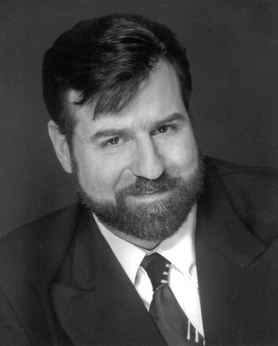

About Gregg
INTRODUCING GREGG
Gregg Unterberger, M.Ed. is a licensed professional counselor and international workshop presenter with offices in Houston and College Station, Texas. In his private practice, he works with individuals and couples who suffer with depression, anxiety, phobias, grief, relationship issues and plain old garden variety stress. He has extensive training and experience in a variety of techniques designed to resolve extreme trauma. He believes both humor and compassion are absolutely essential to build a relationship with his clients in which healing can take place.

EDUCATION & BACKGROUND
He received his Bachelors in Psychology from St. EdwardsUniversityin 1994 and his Masters of Education in Counseling and Guidance with honors from TexasStateUniversityin 1996. He is a lifetime member of Psy Chi, the national honors society in Psychology. He is certified as a Regression Therapist by the Weiss Institute having trained directly under the best-selling author and leading authority in the field of regression, Brian Weiss, MD. Gregg’s case studies are featured in Dr. Weiss’ most recent book, Miracles Happen. Mr. Unterberger was the fifteenth person in the world to be certified as an IADC therapist by Dr. Allan Botkin through The Center for Grief and Traumatic Loss. He has completed Level I and Level II trainings in EMDR (Eye Movement Desensitization and Reprocessing) through the EMDR International Association and Level I and Level II certifications in Brainspotting, training directly under Dr. David Grand, the developer of the Brainspotting technique. His quest for personal meaning led him to a pilgrimage to India to study with Reverend Pandurang Shastriji Athavale, winner of the 1.2 million dollar Templeton Prize for Progress in Religion. Unterberger has additional training in Transpersonal Psychology and Music Imagery under Jacqueline Small, Dr. Judith Orloff, Dr. Belleruth Naparstek, Dr. Stanislav Grof and Grof Transpersonal Training. In addition, Mr. Unterberger is the developer of two breakthrough techniques that may accelerate healing and personal growth: Spiritual Activation and Transpersonal Breathwork. He recently released a two CD set, recorded live in Memphis, entitled Exploring the Mysteries of Your Mind and his new audio Across Time into Clarity will be available soon. Previous professional work includes serving as a State Board Certified Supervisor and Adjunct Faculty in Group Therapy at Texas State University. Mr. Unterberger is the author of the new book, The Quickening: Leaping Ahead on Your Spiritual Journey, published by 4th Dimension Press and available on Amazon.
GREGG’S WORKSHOPS & RETREATS
Gregg has broken attendance records in venues across the United States, presenting on a variety of topics including: personal growth, regression, grief resolution, the healing power of music and sound, enhancing intuition, trauma and recovery and radical new techniques to speed emotional healing and spiritual growth. Many have acknowledged his knack for using humor and metaphor to simplify complex psychological and spiritual truths. Unterberger has presented with the some of the leading wisdom teachers and best-selling authors of our time including Lama Surya Das, Dan Millman, Kevin Todeschi, John Van Auken, Dr. PMH Atwater, Robert J. Grant, Dannion Brinkley, Neale Donald Walsch, Gregg Braden, Dr. Eben Alexander and many others. Unterberger is perhaps best known for his annual four day workshop: The Zion Canyon Retreat: The Heart of Forgiveness, offered every fall in Springdale, Utah, now in its’ fifteen year. He has touched millions through his presentations at churches, colleges and retreats, articles in the popular press and his appearances on regional and national television.